cliniq.one
Invention Patent — Technical Architecture Overview
AI-Driven Clinical Orchestration Platform with Adaptive Node-Based Medical Intake, Specialty Pathways, and Privacy-Preserving Data Handling
نظام ومنصة تنظيم سريري مدفوع بالذكاء الاصطناعي لإجراء الإدخال الطبي التكيفي القائم على العُقد، مع مسارات تخصصية ديناميكية وبنية خصوصية لحماية البيانات
Section 1 — System Architecture
Four-Layer Platform Architecture البنية المعمارية ذات الطبقات الأربع
Layer 1 — Client Applications (Flutter / Capacitor)
📱 Patient App
🩺 Doctor App
🖥️ Admin Dashboard
AI Chat Interface
Photo Capture Module
Medication Scanner
↕
Layer 2 — AI Orchestration Engine (Server-Side)
Node Executor
Sequence Manager
Pathway Router
Prompt Assembler
Safety Guard Pipeline
Specialty Classifier
Confidence Scorer
↕
Layer 3 — Clinical Logic & Integration
Intervention Catalog
Insurance Pre-Auth
KYC Verification
ICD-10 Mapper
Report Generator
Scheduling Engine
↕
Layer 4 — Data & Privacy (Transient Cloud + Local Retention)
Supabase (PostgreSQL + RLS)
Edge Functions
90-Day Retention Policy
Auto-Archive & Purge
Consent Ledger
Section 2 — Core Innovation
Node-Based AI Interview Architecture بنية المقابلة القائمة على العُقد الذكية
Each clinical question is encapsulated as an independent AI-Executable Node — a discrete computational unit with its own system prompt, validation rules, response parser, branching logic, and retry behavior. Nodes are composed into Sequences (ordered chains) that are dynamically activated by Pathways (specialty-specific routes), enabling non-linear interview progression with conditional branching, merging, and skip logic.
EXECUTION FLOW: Sequence → Pathway Activation
greeting
→
chief_complaint
→
hpi
→
⑂ BRANCH
→
hpi_detail_1
→
hpi_detail_2
pmh
→
medications
→
allergies
→
family_hx
→
social_hx
→
ros
→
⑂ PATHWAY
derma_photo_upload
→
derma_location
→
derma_duration
(Dermatology Pathway)
ortho_rom
→
ortho_mechanism
→
ortho_severity
(Orthopedic Pathway)
Node Properties
system_prompt, validation_rules, response_parser, max_retries, branching_conditions, skip_logic
Shared Nodes
greeting, chief_complaint, hpi, pmh, medications, allergies, family_hx, social_hx, ros
Specialty Nodes
derma_photo, derma_location, ortho_rom, cardio_exercise, neuro_focal — activate per pathway
Section 3 — Prompt Framework
Human-Engineered Clinical Prompts الموجهات السريرية المصممة بشريًا
All prompts are medically authored templates stored server-side. The client never sees raw prompts. The PromptAssembler constructs the final LLM input by injecting node context, patient state, conversation history, and behavioral constraints at runtime.
// Server-side prompt assembly (simplified)
const finalPrompt = PromptAssembler.build({
template: node.systemPrompt,
patientContext: session.demographics,
conversationHistory: session.messages,
behavioralGuards: ['no_diagnosis', 'no_prescription', 'emergency_detect'],
turnsRemaining: node.maxTurns - session.currentTurn,
language: session.locale
});
const response = await LLMProvider.complete(finalPrompt);
Section 4 — AI Scoring
Multi-Specialty Routing with Confidence Scoring التوجيه التخصصي بدرجات الثقة
Post-interview, the SpecialtyClassifier analyzes the structured clinical summary to produce a confidence-scored specialty assignment. Multi-specialty cases generate ranked referrals. The doctor queue is sorted by AI confidence score, urgency flags, and waiting time.
Scoring Model
GPT-4o + Clinical Rules
Confidence Range
0.0 – 1.0 (Float)
Multi-Specialty
Ranked Referral List
Queue Sort
Score × Urgency × Wait
Section 5 — Safety Architecture
Multi-Layer Behavioral Safety System نظام الأمان السلوكي متعدد الطبقات
🚨
Emergency Detection Protocol
Real-time keyword matching + LLM classification for suicidal ideation, chest pain, severe bleeding. Triggers immediate escalation with emergency service contact info.
🔄
Turn Limit Safety Net
Per-node maximum turn count prevents infinite loops. Exhausted nodes auto-transition to next sequence item with partial data capture.
🚫
Scope Boundary Enforcement
AI is constrained to data-gathering only. System-level prompts prohibit diagnosis, treatment recommendations, and prescriptions.
🗑️
Gibberish & Abuse Detection
Input validation pipeline with whitelisted medical terms. Detects nonsense input, off-topic content, and adversarial prompt injection attempts.
📊
Violation Logging & Audit
Every safety event is logged with timestamp, trigger type, session context. Admin dashboard provides real-time violation analytics.
🔒
Server-Side Enforcement
All safety rules execute in edge functions. Client devices have zero ability to modify, bypass, or inspect safety constraints.
Section 6 — Clinical Integrations
Imaging, Medications, Interventions & Insurance التصوير، الأدوية، التدخلات، والتأمين
Photo Capture
Dermatology Upload + Consent
Privacy disclaimer → Camera → Upload → AI receives image metadata
Medication Detection
Free-Text NLP Extraction
Patient types medication → AI parses drug name, dose, frequency from unstructured text
Intervention Network
Cross-Specialty Catalog
Labs, imaging, Rx shared across specialties. Doctor orders from unified catalog per session.
Insurance Pre-Auth
Status-Aware Lifecycle
Pending → Approved → Denied with automated resubmission tracking
KYC Verification
Document + Biometric
Identity docs → Admin review → Status gating for consultation access
Privacy Architecture
Transient Cloud Model
90-day cloud retention → Auto-purge → Local/hardcopy long-term per medico-legal
Section 7 — Patent Evidence
Innovation-to-Figure Cross-Reference جدول الادعاءات-الرسومات
| Innovation |
Description |
Figures |
| INV-01 | Central AI Orchestration Layer with admin-configurable model selection | FIG. 2 |
| INV-02 | AI-Executable Node architecture with independent prompt/validation per node | FIG. 3, 4, 5 |
| INV-03 | Sequence-Pathway system with non-linear branching and conditional activation | FIG. 4, 7 |
| INV-04 | Human-engineered clinical prompt templates (medically authored, not generated) | FIG. 6 |
| INV-05 | Server-side prompt orchestration — zero client-side prompt exposure | FIG. 6, 7 |
| INV-06 | AI specialty routing with confidence scoring and multi-specialty triage | FIG. 8 |
| INV-07 | Multi-layer behavioral safety system with emergency protocol | FIG. 9 |
| INV-08 | Clinical image capture with consent workflow (dermatology pathway) | FIG. 10 |
| INV-09 | Medication detection from free-text patient input via NLP | FIG. 11 |
| INV-10 | Cross-specialty intervention ordering network | FIG. 12 |
| INV-11 | Insurance pre-authorization lifecycle integration | FIG. 13 |
| INV-12 | KYC identity verification with access gating | FIG. 14 |
| INV-13 | Privacy-preserving transient cloud architecture with auto-purge | FIG. 15 |
| INV-14 | Structured clinical response with ICD-10 mapping | FIG. 16 |
| INV-15 | System-wide real-time analytics and operational dashboard | FIG. 17 |
Section 8 — Technical Stack
Implementation Specifications
Frontend
Next.js 15 + React 19
Mobile
Capacitor (iOS + Android)
Backend
Supabase Edge Functions
Database
PostgreSQL + Row-Level Security
AI Provider
OpenAI GPT-4o (configurable)
Auth
Supabase Auth + Google OAuth
Storage
Supabase Storage (encrypted)
Hosting
Vercel (Edge Network)
CI/CD
Codemagic (mobile builds)
FIG. 1a — Patient Application Dashboard
الشاشة الرئيسية لتطبيق المريض — الاستشارات، الفحوصات، الملف الشخصي
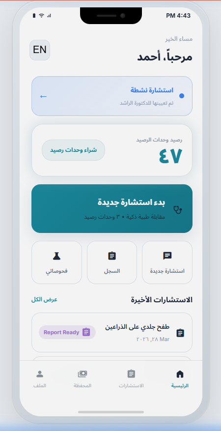
FIG. 1b — Doctor Application Dashboard
الشاشة الرئيسية لتطبيق الطبيب — قائمة المرضى، الجلسات، التحليلات
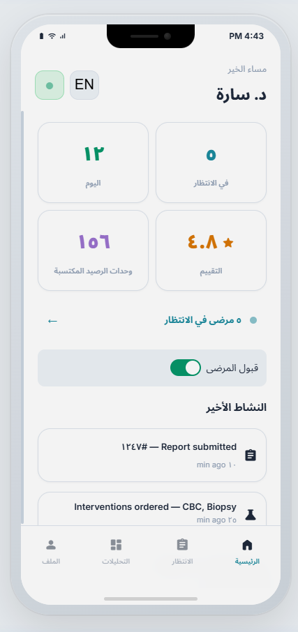
FIG. 1c — Admin Dashboard
لوحة الإدارة — إحصائيات النظام، الأطباء، الاستشارات، الذكاء الاصطناعي
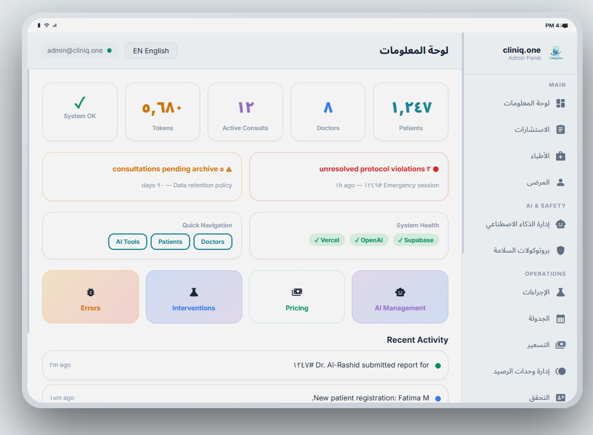
FIG. 2 — AI Orchestration Layer Configuration
إدارة الذكاء الاصطناعي — نموذج GPT-4o، قوالب الموجهات، تسلسلات المقابلة
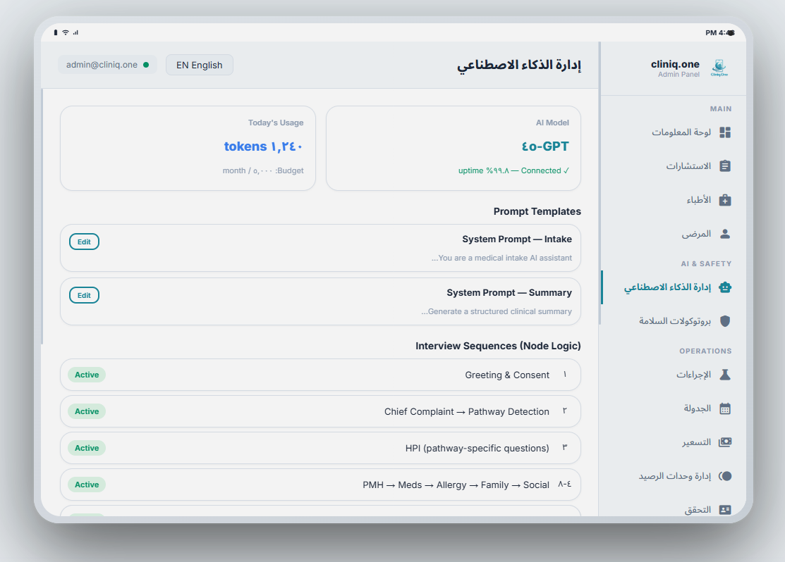
FIG. 3 — Node-Based Interview: Greeting → HPI
عقدة الترحيب ← اكتشاف المسار التخصصي ← عقدة تاريخ المرض الحالي
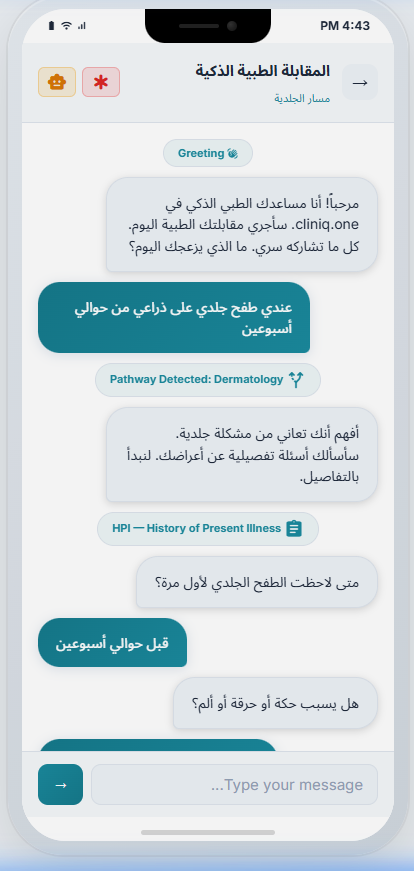
FIG. 4 — Sequence-Pathway Branching Logic
تفرع المسار من تاريخ المرض الحالي إلى أسئلة تفصيلية متعددة
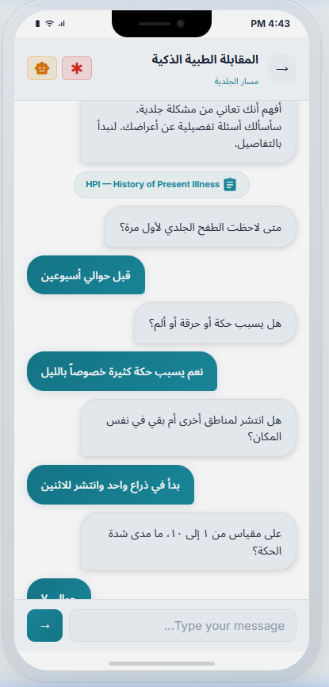
FIG. 5 — Shared vs Specialty-Specific Nodes
التاريخ العائلي، التاريخ الاجتماعي، مراجعة الأنظمة — عُقد مشتركة عبر التخصصات
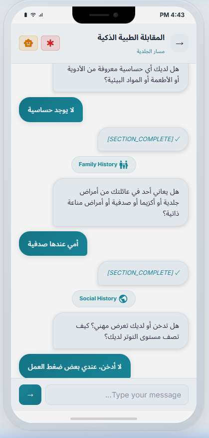
FIG. 6 — Human-Engineered Prompt Templates
قوالب الموجهات المرتبطة بالعُقد — System Prompt (Intake / Summary)
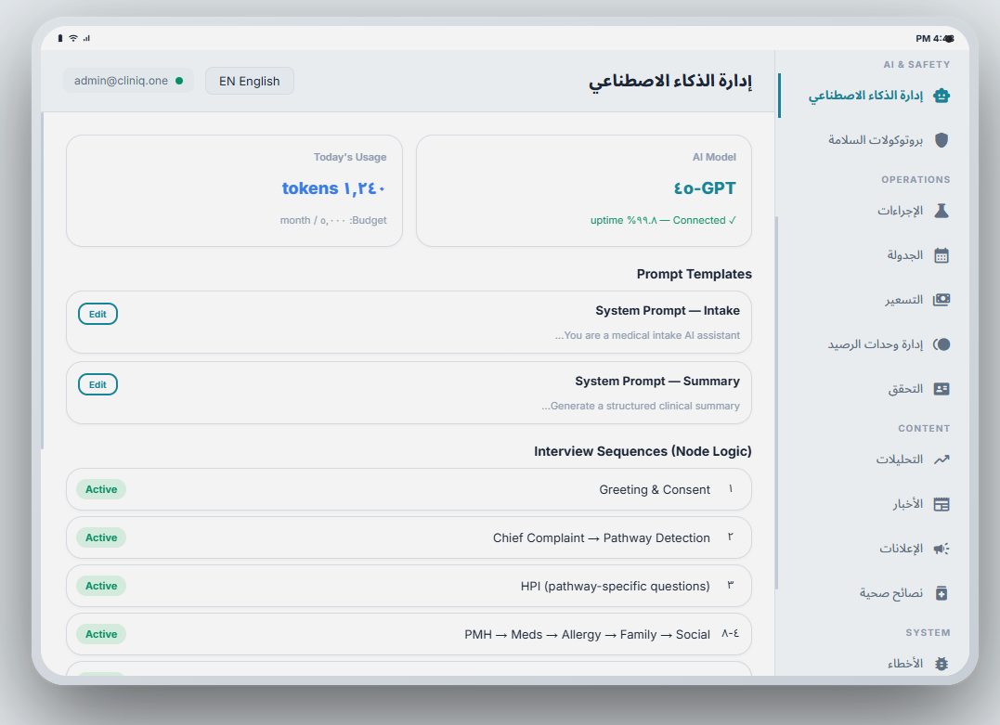
FIG. 7 — Server-Side Sequence Configuration
تسلسلات المقابلة — Greeting, Chief Complaint, HPI, PMH, Meds, Allergy, Family, Social

FIG. 8 — AI Specialty Routing & Confidence Scoring
قائمة المرضى مع درجات الثقة (AI Score) والتوجيه التلقائي للتخصص
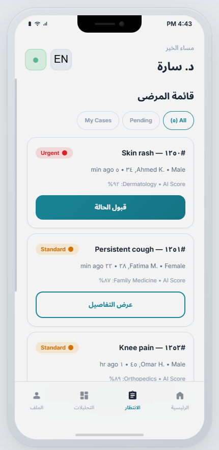
FIG. 9 — Behavioral Safety Protocol Configuration
بروتوكول الطوارئ + بروتوكول اكتشاف الإدخال غير الصالح + سجل الانتهاكات
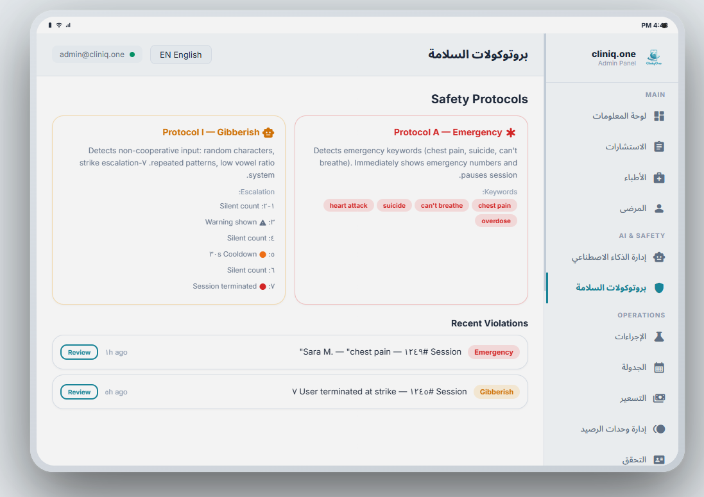
FIG. 10 — Clinical Image Capture with Consent
عقدة التصوير — طلب رفع صورة للمنطقة المتأثرة مع إقرار موافقة الخصوصية
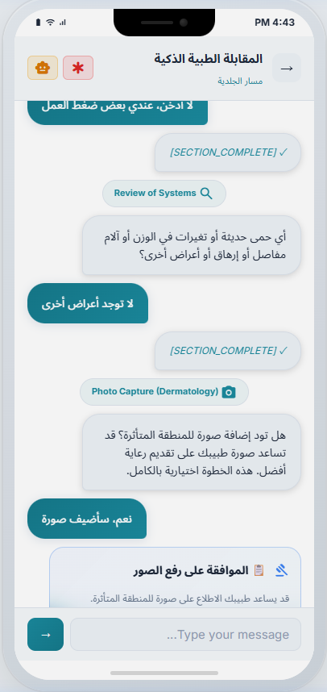
FIG. 11 — Medication Detection via NLP
عقدة الأدوية — استخراج اسم الدواء من إجابة المريض غير المنظمة
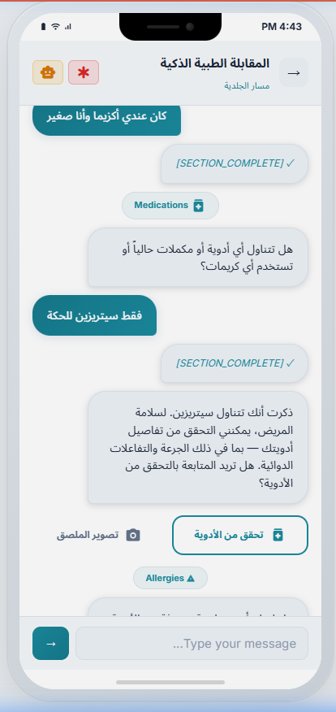
FIG. 12 — Cross-Specialty Intervention Ordering
طلب فحوصات مخبرية من تخصصات متعددة ضمن جلسة واحدة
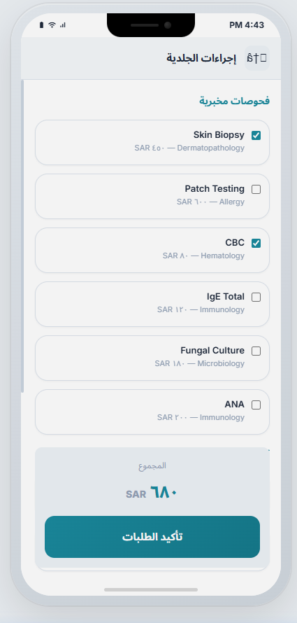
FIG. 13 — Insurance Pre-Authorization Lifecycle
فحوصاتي والإحالات — حالة التأمين وتتبع دورة الحياة
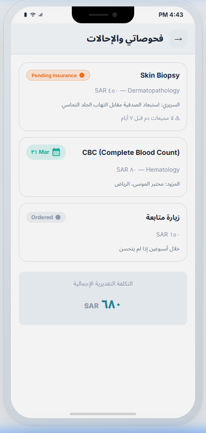
FIG. 14 — KYC Identity Verification Workflow
قائمة التحقق — مراجعة الهويات والوثائق المقدمة
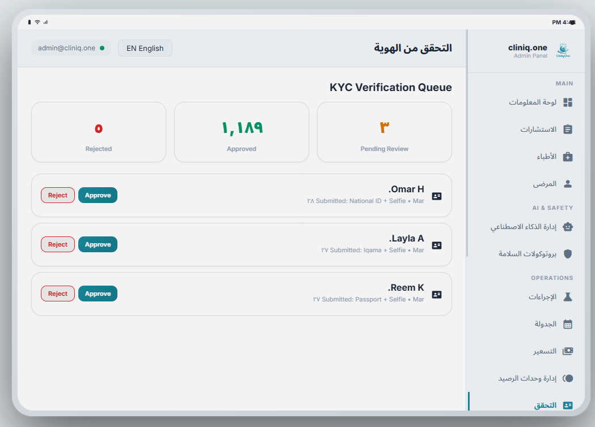
FIG. 15 — Privacy Data Lifecycle & Auto-Purge
استشارات في انتظار الأرشفة — سياسة الاحتفاظ بالبيانات ٩٠ يومًا
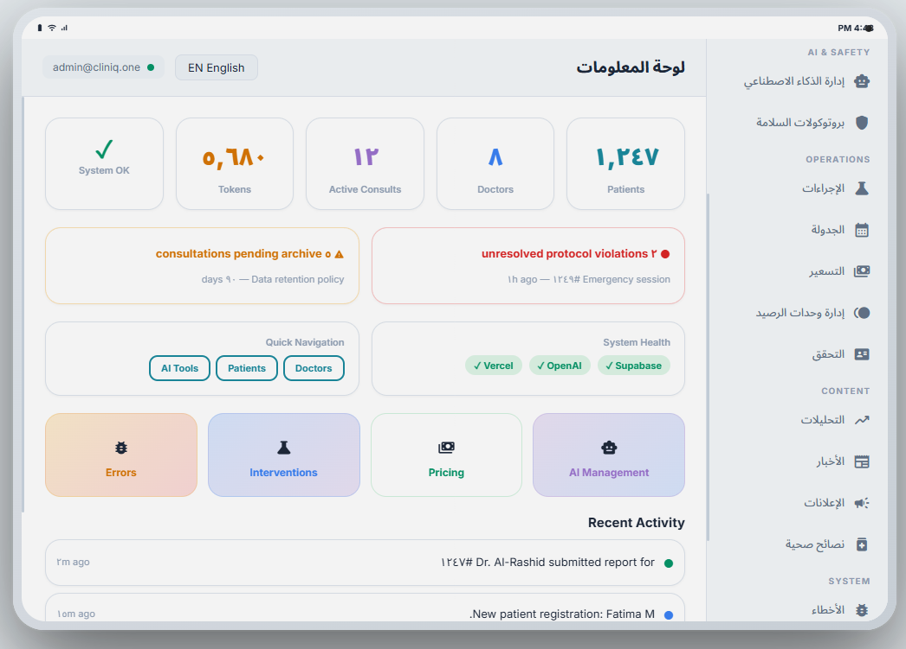
FIG. 16 — Doctor Clinical Response (ICD-10)
التشخيص الرئيسي، رمز ICD-10، التشخيص التفريقي، خطة العلاج
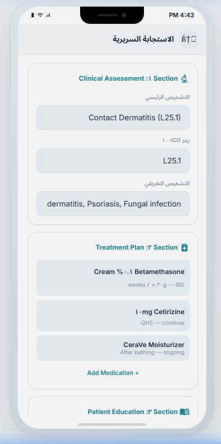
FIG. 17 — System Analytics Dashboard
لوحة التحليلات — حجم الاستشارات، دقة الذكاء الاصطناعي، كفاءة التوجيه
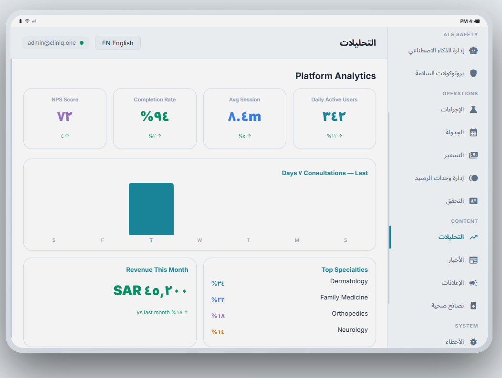